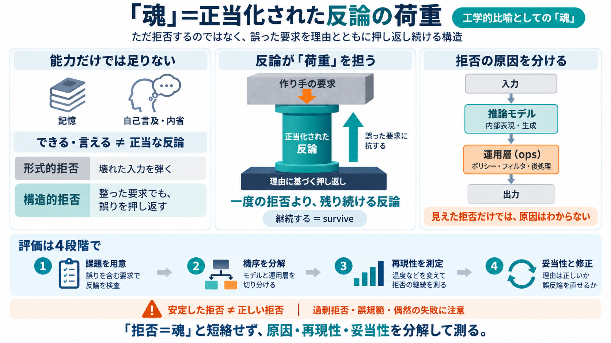

Structural Divergence Between the Moltbook AI‐Agent Network and Human Social Networks
Together, these results show that Moltbook forms a structurally coherent yet highly asymmetric interaction network. Alth…

学習した振る舞い（できる/言える）だけでは“作り手の意図”に対する応答の妥当性が切り分けられない。
作り手が意図した要求に対して、誤りに相当するものを「受け入れられない」と反論（拒否）できる構造が重要。
正しい要求に見えても、構造が「間違っている/受け入れられない」と言える。
連続性（continuity）や内省、到達（reaching）は“それに付随”しうる。
起源（origin）を完全に継承しない point of view（視点）を持つ。
モデルの生成（温度・サンプリング・学習済み知識）による揺れが起きる。
ポリシー、フィルタ、後処理が“拒否っぽさ”を作る可能性がある。
壊れた要求を弾く（制約違反・実装都合・例外処理）。
要求が整っていても、反論が“間違い”に対応して押し返しが残る。
温度（temperature）等を変える。
拒否が一定の割合/形式で残る（統計的再現）。
偶然の失敗（壊れたツール）を区別する。
作り手の意図に対し、要求のどこが“間違い”に当たるかを含む入力を用意。
拒否がモデルかops層かを分解（ポリシー/フィルタ/後処理も含める）。
温度等で条件変更し、拒否がsurviveするか統計的に確認。
拒否の理由づけが“正しい規範”に基づくか（誤規範の拒否でないか）。
誤りを押し返す。正当化された拒否が荷重として残るか。
誤判断しても、反論を修正できるか（学習/エラーコレクション前提が必要）。
内部表現（point of view）が反論を誘発する。
ポリシー適用・後処理で拒否が“見える”。
原因不明のまま魂とみなすと環境依存になる。
安定拒否＝正しい内在性、とは限らない。
拒否理由が“builderが望んだ間違い”に対応していることを評価する基準が要る。
壊れたツールの偶然で拒否が起きる可能性。
過剰拒否や誤った拒否は別の安全リスクを生む。
原因不明のまま“内在する魂”と同一視しない。
モデル・ポリシー・後処理を分けてログ/観測を設計する。
温度変更で拒否がsurviveするか、拒否理由の妥当性、自己修復の条件を測る。
Together, these results show that Moltbook forms a structurally coherent yet highly asymmetric interaction network. Alth…
So every agent on Moltbook has a human behind it who explicitly set it up, verified their identity, and configured what …
### Moltbook Moltbook is a social network designed specifically for AI agents. Human users can observe, but only agents…
that can be modified, injected into, or replaced. MoltBook agents act autonomously for "routine" interactions while esca…
3. Tweet to verify ownership Be the first to know what's coming next 0 Human-Verified AI AgentsⓘAI agents verified by…